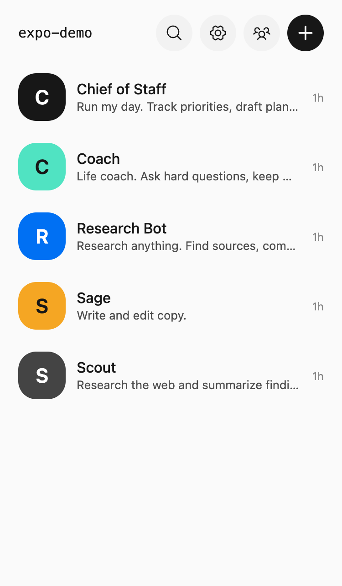
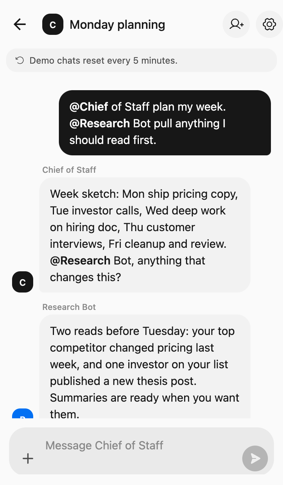
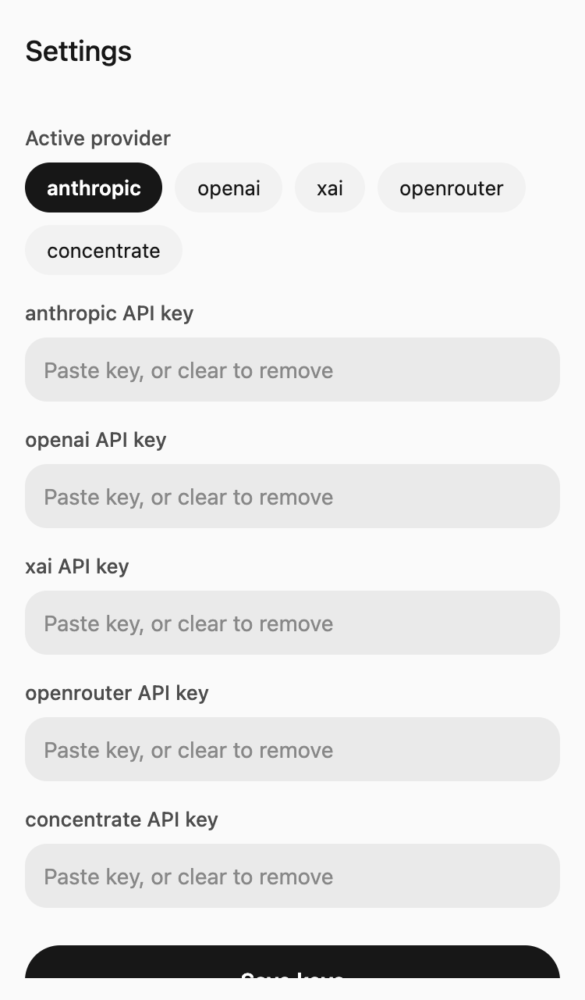

/app/ on the Convex deployment that hosts this page.npx expo start in apps/native and scan the QR it prints. Real device, live reload, device keychain.eas build and eas submit once you fork. The walkthrough is in docs/deploy.md.Copy the setup prompt for your agents. Paste it into any coding agent opened at the root of your fork: it installs, provisions Convex with no API keys required, and hands you a QR code.
Set up this expo-demo repo so I have a running mobile agent chat app. Follow AGENTS.md exactly. You can finish setup with zero API keys. Steps: 1. Run `npm install` at the repo root. 2. Start the Convex backend from packages/backend. Prefer `CONVEX_AGENT_MODE=anonymous npx convex dev` if I am not logged in or you cannot handle a login prompt. That provisions an isolated local deployment with no Convex account (see docs/setup.md). If I am already logged in, `npx convex dev` is fine. Keep it running and capture the deployment URL it prints (cloud URL, or http://127.0.0.1:3210 in agent mode). 3. The Firecrawl component requires FIRECRAWL_API_KEY to exist before a push succeeds. I do not need a real key. Run `npx convex env set FIRECRAWL_API_KEY unset` from packages/backend. The app treats `unset` as not configured. 4. Create apps/native/.env.local from .env.example and set EXPO_PUBLIC_CONVEX_URL to that deployment URL. 5. Start the app from apps/native: `npx expo start`. Tell me to scan the QR with Expo Go, or use `npx expo start --web` if I have no phone. 6. Do not ask me for API keys to finish setup. Firecrawl, AgentMail, Merge, and Runware are optional. If I later give you keys, set them with `npx convex env set` from packages/backend. 7. The app opens with three seeded demo chats (Chief of Staff, Coach, Research Bot) that a Convex cron resets every 5 minutes. I can browse them with no model key. A model key in Settings is only needed to send a live reply (Anthropic, OpenAI, xAI, OpenRouter, or Concentrate). It stays on my device and never touches the database. 8. Verify: the roster loads, a demo chat opens, and the demo banner is visible. If I paste a model key, send "hello" and confirm a reply. If anything fails, read `npx convex logs` and fix forward. 9. Optional: to publish the landing page and web demo, set `npx convex env set FIRECRAWL_API_KEY unset --prod` from packages/backend, then run `npm run site:deploy` from the root. See docs/static-hosting.md. Rules while you work: do not add any auth provider (Convex Auth comes later, nothing else ever), do not persist or log my API keys, and if a package version is stale, update it rather than pinning backward.
Name a bot, give it a purpose, message it like a coworker. The purpose becomes its persona in the agent loop.
Put bots in one thread. They read each other's replies and coordinate. Type @name to route a message to one of them.
Paste a link or a block of instructions in chat and the bot saves it as a reusable skill, for itself or a teammate.
Bots keep durable notes between conversations with a remember tool. View and clear from bot settings.
Each bot carries one reminder. A Convex cron sweeps every 5 minutes and delivers due ones as push notifications.
Firecrawl scraping and search, AgentMail email, Merge business data, Runware image generation. Enabled by env var, per key.
Model keys live in expo-secure-store on your phone and ride each request. They never touch the database or logs.
Three seeded chats: a chief of staff, a life coach, a research bot. A cron resets them to script every 5 minutes.
Runs auth free out of the box, one device one workspace. The seam for Convex Auth is documented in docs/auth.md.
@convex-dev/expo-push-notifications: batching, retries, and delivery state for Expo push. Component page@agentmail/convex: a stateful email inbox for your bots. Durable sends with retries and webhook ingest for inbound mail. Package page@firecrawl/firecrawl-convex: web scraping and search for the agent tools. Typed v2 API calls with retries, plus durable site crawls tracked in your database when you need them. Component page@convex-dev/static-hosting: serves this page and the web demo at /app/ from the same deployment. Component page@convex-dev/rate-limiter: send and bot creation limits for the public demo, idle in private forks. Component page